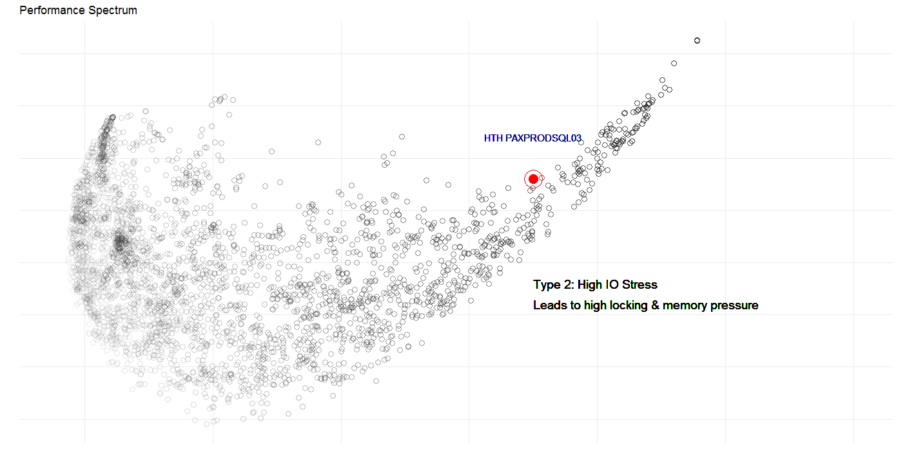
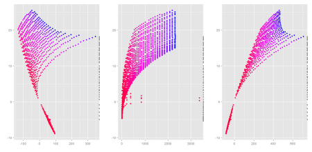

Nick Burns
Bayesian Enthusiast
Featured Work

Type 2: High IO Stress
Leads to high locking and memory pressure.

Anomaly Detection
How good is Elasticsearch Anomaly Detection?
We roll up our sleeves and find out!

Eyecandy!
Shining a light on big-data with interactive visualisation.